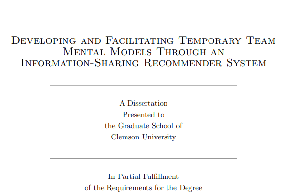
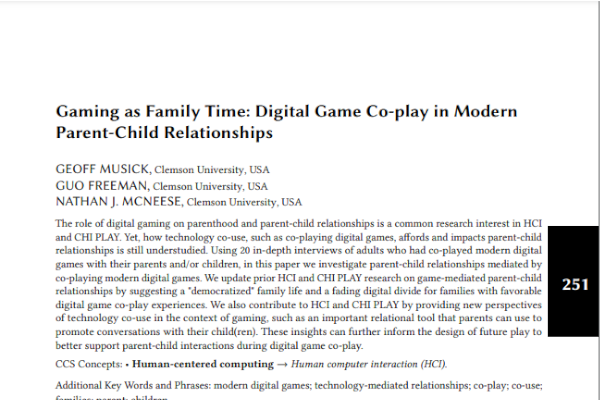
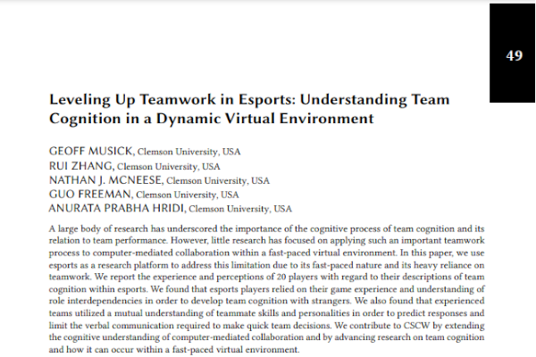
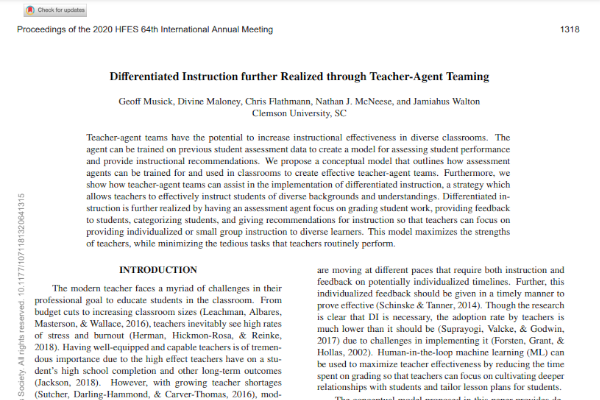
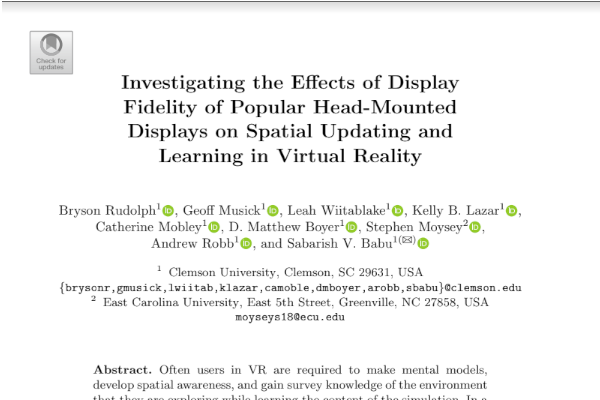

Research
For more information, visit my Google Scholar or Research Gate profile.
-
Selective Sharing is Caring: Toward the Design of a Collaborative Tool to Facilitate Team Sharing
• Goal: Better understand user perceptions of sharing personal information on temporary teams.
• Methods: qualitative surveys (content analysis and thematic analysis), field study, and quantiative surveys.
• Findings and Design Recommendations: 1) Users perceived personality and conflict management style assessments to be accurate and sharing these assessments to be helpful, but had mixed perceptions regarding the appropriateness of sharing; 2) Users of the collaborative tool had higher perceptions of sharing in terms of helpfulness and appropriateness; and 3) User feedback highlighted the need for tools to selectively share less data with more context to improve appropriateness and helpfulness while reducing the amount of time to read.
-
 Developing and Facilitating Temporary Team Mental Models Through an Information-Sharing Recommender System
• Goal: Create a foundation and thorough understanding of how recommender system technology can be used to promote teammate TMMs through information sharing while limiting privacy concerns.
• Methods, 4 Studies: (1) qualitative surveys (content analysis and thematic analysis) and field study; (2) semi-structured interviews, surveys, A/B testing, and field study; (3) analytics and survey; and (4) A/B testing, analytics, and survey
• Findings and Design Recommendations: (1) recommendations for the type of information to use; (2) recommendations on presentation - avoid using anonymity and use better explanations; (3) provided directions for user-tailored privacy and factors to consider when creating that model; and (4) recommendations for the type of explanation to provide and when to provide it to promote disclosure, reduce privacy concerns, and increase trust and satisfaction.
-

I See You: Examining the Role of Spatial Information in Human-Agent Teams
• Goal: Determine the role of spatial awareness in team cognition development for different human-agent and human-human team compositions.
• Methods: 2x3 factorial design completed between subjects. Remote user study with quantitative and qualitative measures (analytics, A/B testing, surveys).
• Findings and Design Recommendations: Human-agent teams had better team mental model similarity when spatial awareness was high rather than low, while human-only teams experienced the reverse trend. High spatial awareness jump-started team cognition development, fostered more accurate shared mental models, enhanced the explainability of the agent, and helped the iterative development of team cognition over time.
-
 Gaming as Family Time: Digital Game Co-play in Modern Parent-Child Relationships
• Goal: Determine how co-playing digital games affords and impacts parent-child relationships.
• Methods: Remote semi-structured interviews with parents followed by thematic analysis.
• Findings and Design Recommendations: (1) the importance of encouraging conversations both in and after gameplay and (2) promoting co-viewing to strengthen connections through shared interests.
-

What Happens When Humans Believe Their Teammate is an AI? An Investigation into Humans Teaming with Autonomy
• Goal: Understand how the perceived composition of a team (how many humans and how many agents on the team) affects sentiments toward teammates, team process, cognitive states, and the emergence of a system of team cogntiion.
• Methods: User study that involved 46 teams working together on an online platform with a "Wizard of Oz" methodology followed by semi-structured focus group interviews.
• Findings and Design Recommendations: Multi-agent human-agent teams were impaired because of some social cognitive processes involved in the perception of autonomous agent as teammates. This study advanced models of team development and the emergence of team cognition.
-
 Leveling Up Teamwork in Esports: Understanding Team Cognition in a Dynamic Virtual Environment
• Goal: Understand how team cognition is perceived, defined, developed, and facilitated in an esports teaming environment.
• Methods: Remote and in-person semi-structured interviews with esports players followed by thematic analysis.
• Design Recommendations: (1) use pre-game lobbies and "matchmaking" to establish teammate understanding; (2) use focused communication to avoid distractions within chaotic environments; and (3) leverage review tools to assist teammates in developing a shared mental model.
-

"An Ideal Human": Expectations of AI Teammates in Human-AI Teaming
• Goal: Understand how users perceive and what they expect from AI teammates in human-AI teamming.
• Methods: Remote and in-person semi-structured interviews with esports players, thematic analysis, and surveys.
• Findings and Design Recommendations: (1) AI should be taken into account as a subject in collaborative-activity design; (2) designers may take advantage of AI's innate abilities in human-AI teaming design when considering aspects such as roles, tasks, or goals; and (3) designers should create special team activities or mechanics to facilitate the development of a mutual understanding between AIs and human teammates.
-
 Differentiated Instruction further Realized through Teacher-Agent Teaming
• Goal: Create a conceptual model for how differentiated instruction could be supported in teacher-agent teaming.
• Methods: Literature review to create a conceptual model.
• Result: Conceptual model to support the design of agents for teacher-agent teaming for differentiated instruction.
-
 Investigating the Effects of Display Fidelity of Popular Head-Mounted Displays on Spatial Updating and Learning in Virtual Reality
• Goal: Understand how the fidelity of various head-mounted virtual reality displays can influence spatial updating performance and content learning performance.
• Methods: Usability lab study, A/B testing, surveys, analytics.
• Findings and Design Recommendations: High-fidelity contemporary head-mounted displays allow users to have better spatial updating and content learning than popular lower fidelity displays.
-

Creating a junction between single layer graphene and single layer MoS2